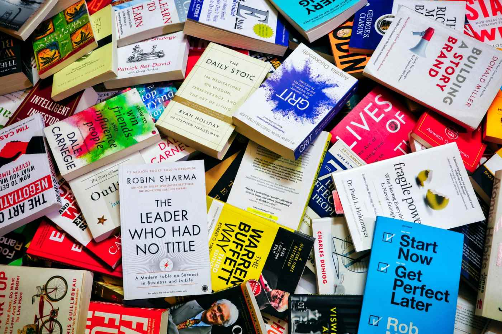
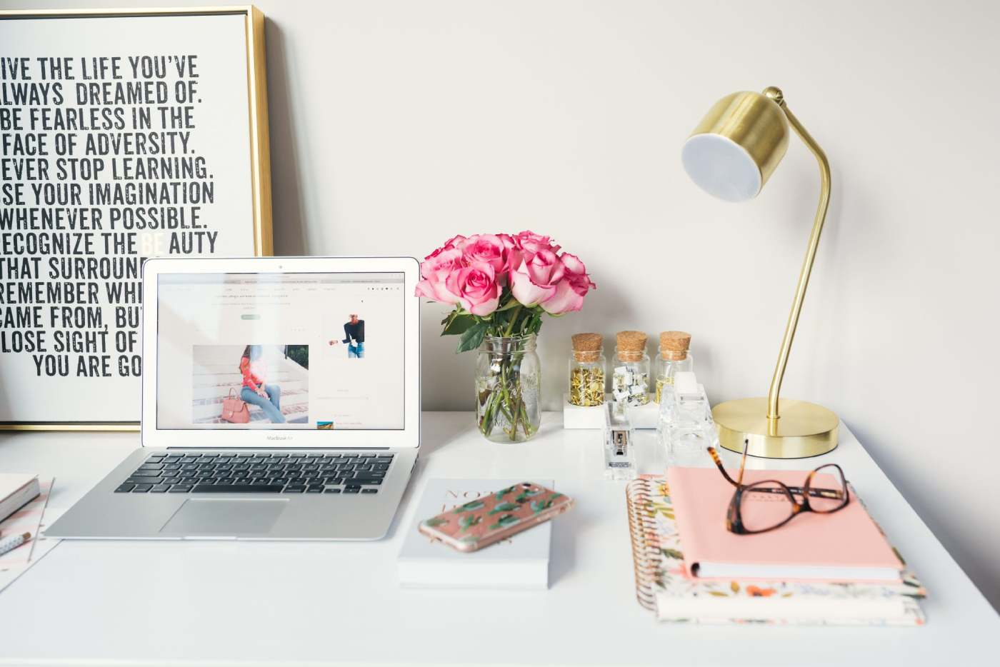
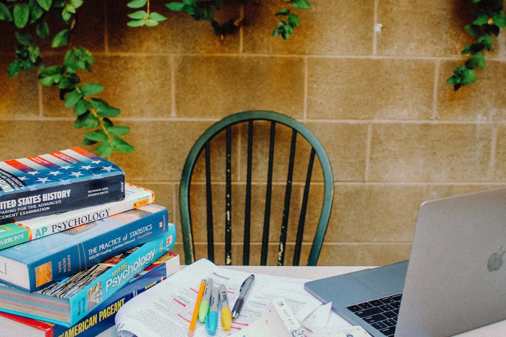

L
aunch Sphere
Home
Books
About
Blog
Contact
Account
Logout
0
Turning Pages: Must-Read Books of the Year
Explore a curated list of this year’s most compelling reads across genres. From thrillers to memoirs, find your next favorite book.
Beyond the Cover: Hidden Gems in Literature
Discover underrated books that deserve a spot on every reader’s shelf. These hidden treasures offer powerful stories and unique perspectives.

Books vs. Screen: Why Reading Still Wins
In the age of streaming, books continue to offer unmatched depth and imagination. Here’s why turning pages still beats watching screens.

From Shelf to Soul: Books That Change Lives
Some books leave a lasting mark long after the last page. Dive into transformative reads that have inspired readers worldwide.
Travel the World Through Books
Experience different cultures, cities, and eras through the magic of storytelling. These books take you places without leaving home.

The Art of Re-reading: Why Great Books Deserve a Second Look
Revisiting beloved books can offer fresh insights and deeper appreciation. Here's why some stories are worth reading more than once.